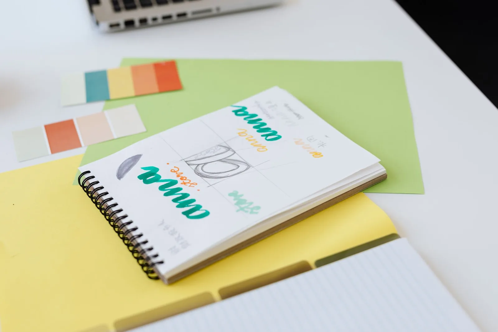
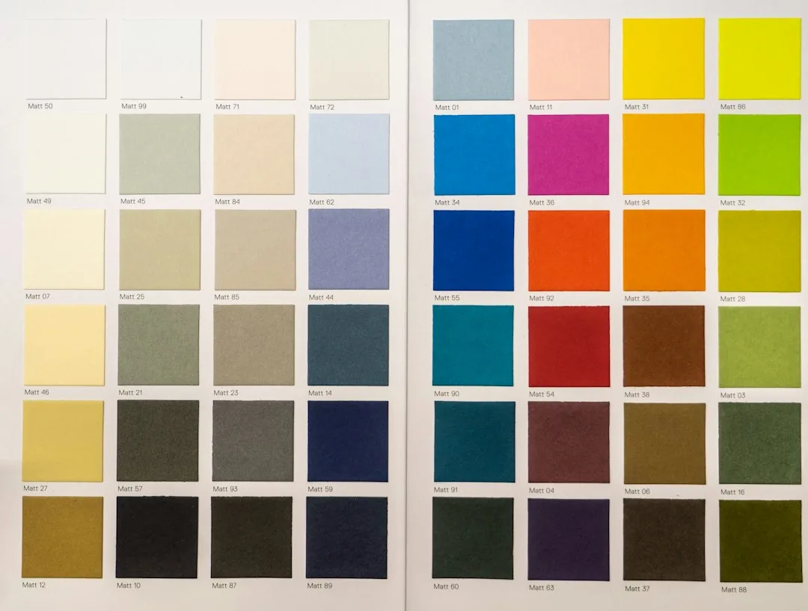
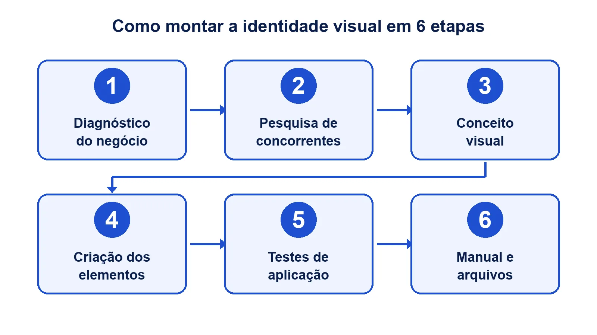
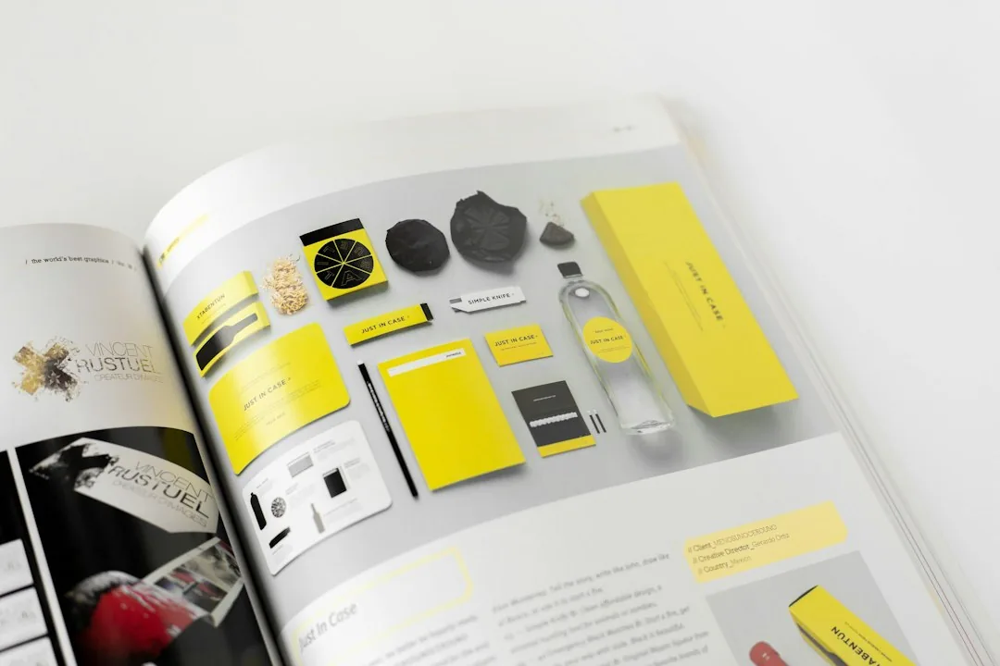
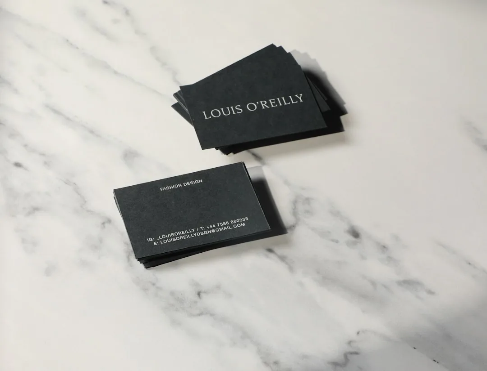

Identidade Visual: O que É, Elementos e Como Montar

Pense em duas padarias na mesma rua. A primeira tem a fachada azul, o cardápio impresso em vermelho, o Instagram cheio de filtros diferentes e um cartão de visita feito às pressas numa gráfica rápida. A segunda usa as mesmas duas cores na fachada, na sacola, no site e nos posts. Você nunca conversou com nenhum dos donos, mas já desconfia de qual delas está mais organizada.
Essa impressão nasce da identidade visual. Ela é o que faz o cliente reconhecer a sua empresa antes de ler o nome, e é também o que separa uma marca que parece profissional de uma que parece improvisada.
Neste guia você vai entender o que é identidade visual, quais elementos fazem parte dela e como montar a da sua empresa passo a passo. No fim, mostramos o que precisa entrar no manual de identidade visual e onde tudo isso aparece na rotina do negócio.
O que é identidade visual e por que ela vai além da logo
Identidade visual é o conjunto de elementos gráficos que representa uma empresa e as regras para usar esses elementos sempre do mesmo jeito. Entram nela a logo, as cores, as fontes, os ícones, o estilo das fotos e a forma de organizar tudo isso numa peça.
A palavra que importa aí é "conjunto". Uma logo sozinha não é identidade visual. Ela é uma peça importante, mas é só uma. Quando a empresa precisa fazer um post, uma proposta comercial ou uma placa, a logo não diz qual cor usar no fundo, que fonte colocar no título nem que tipo de foto combina com a marca. Quem responde a essas perguntas é a identidade visual completa.
No nosso artigo sobre como criar um logotipo, usamos uma comparação que ajuda bastante: a logo é o rosto, e a identidade visual é a pessoa inteira, com o jeito de se vestir e de se comportar. Aqui o assunto é a pessoa inteira.
Identidade visual, marca e branding: cada coisa no seu lugar
Esses três termos aparecem misturados o tempo todo, e a confusão atrapalha na hora de contratar.
A marca é a percepção que as pessoas têm da sua empresa. Ela envolve reputação, atendimento, preço e experiência, e mora na cabeça do cliente. O branding é o trabalho de construir e gerir essa percepção ao longo do tempo, com posicionamento, tom de voz e promessa. A identidade visual é a parte que se vê. Em outras palavras, é a tradução gráfica do que a marca quer transmitir.
| Termo | O que é | Exemplo prático |
|---|---|---|
| Logo | O símbolo ou o nome desenhado que identifica a empresa | O desenho que vai na fachada e no perfil do Instagram |
| Identidade visual | O sistema de logo, cores, fontes, elementos e regras de uso | A combinação de verde e cinza, a fonte dos títulos e o estilo das fotos |
| Branding | A gestão da marca como um todo, incluindo o que não é visual | O posicionamento "atendimento rápido e sem burocracia" e o tom de voz |
| Marca | A percepção que o público tem da empresa | O que o cliente comenta da sua empresa com um amigo |
A identidade visual depende do branding. Se a empresa não sabe o que quer transmitir, a escolha de cores e fontes vira gosto pessoal. É por isso que um bom projeto começa com perguntas sobre o negócio, e não com desenho.
O que a identidade visual faz pelo negócio
O primeiro ganho é o reconhecimento. Quando as mesmas cores e fontes se repetem em todo lugar, o cliente passa a identificar a sua empresa no meio do feed, na prateleira ou na rua, mesmo sem ler o nome.
O segundo ganho é a confiança. Uma empresa com identidade visual consistente passa a impressão de que cuida dos detalhes, e o cliente tende a imaginar que ela também cuida do serviço. A inconsistência causa o efeito contrário. Um site com uma cor, um orçamento com outra e um post com uma terceira sugerem desorganização, mesmo quando o trabalho é bom.
O terceiro ganho é a agilidade. Com as regras definidas, ninguém precisa decidir do zero a cada peça. O social media, o desenvolvedor do site e a gráfica trabalham com as mesmas referências, e o material sai pronto mais rápido.

Os elementos de uma identidade visual
Cada projeto tem as suas particularidades, mas quase toda identidade visual para empresa se apoia nos mesmos cinco elementos. Conhecer cada um ajuda você a conferir se o trabalho que recebeu está completo.
Logo e suas versões
A logo entra como peça central, e o detalhe que mais falta nos projetos simples são as versões. Uma marca precisa de pelo menos uma versão horizontal, uma vertical ou reduzida, uma versão só em uma cor e outra para fundo escuro. Sem isso, a logo fica ilegível no ícone do aplicativo, no carimbo ou na camiseta preta.
O processo de criação da logo, os tipos de logo e o preço desse trabalho estão no artigo sobre logotipo. Aqui basta saber que a logo precisa funcionar em tamanhos e fundos diferentes, porque é isso que o sistema vai exigir dela.
Paleta de cores
A paleta de cores da identidade visual normalmente tem duas ou três cores principais e algumas cores de apoio. As principais carregam a marca. As de apoio servem para fundos, textos e detalhes.
Cada cor ganha um código, uma espécie de RG da cor. Como a tela e a impressora leem cor de jeitos diferentes, os códigos também mudam: HEX e RGB para site e redes, CMYK para impressão e, quando a gráfica pede, a referência Pantone, um catálogo de cores padronizado usado para acertar o tom exato. Sem os códigos, cada fornecedor escolhe um "azul parecido", e a marca muda de tom a cada material.
A escolha da cor também precisa de critério técnico. O texto em cima de um fundo colorido tem de ser fácil de ler, e existe uma régua para medir isso. As diretrizes de acessibilidade do W3C, o consórcio que define padrões da internet, pedem um contraste mínimo de 4,5:1 entre texto comum e fundo (3:1 para texto grande). Respeitar esse contraste evita o clássico texto amarelo em fundo branco que ninguém consegue ler.
Tipografia
Tipografia é a escolha das fontes da marca. Em geral, são uma fonte para títulos e outra para textos longos. A fonte de título pode ter mais personalidade. Já a de texto precisa ser confortável de ler em parágrafos, inclusive na tela do celular.
Um cuidado pouco lembrado é a licença. Nem toda fonte bonita pode ser usada de graça em material comercial. Fontes de bibliotecas abertas, como a do Google Fonts, resolvem a maioria dos casos sem custo e funcionam bem em sites.
Elementos gráficos, ícones e padrões
São os recursos que completam o visual: formas que se repetem, texturas, padrões de fundo, molduras, setas e um estilo de ícones. Eles dão personalidade às peças sem depender da logo em todo canto.
Um bom elemento gráfico faz o post da marca ser reconhecido mesmo quando a logo está pequena ou nem aparece. Pense nas três listras de uma marca esportiva ou no vermelho com branco de um refrigerante famoso: muita gente reconhece a marca sem ver a logo. Na sua empresa, pode ser uma faixa diagonal ou uma moldura que se repete em todo post.
Estilo de fotos e ilustrações
Esse é o elemento mais esquecido. A identidade visual define que tipo de imagem combina com a marca: fotos claras ou escuras, pessoas reais ou produtos isolados, ilustração plana ou em 3D. Sem essa definição, cada post usa uma foto de banco de imagens diferente, e o perfil vira uma colcha de retalhos.
Dica de quem monta identidade visual toda semana: olhe a paleta no celular, e não só no monitor grande da apresentação. Muita cor que parece linda num slide some na tela pequena ou fica escura demais quando impressa.
Como montar a identidade visual da sua empresa em 6 etapas
Montar uma identidade visual segue uma lógica parecida, seja o trabalho feito por uma agência, por um designer independente ou com a sua participação direta. Conhecer as etapas ajuda você a acompanhar o projeto e a cobrar o que estiver faltando.

1. Diagnóstico do negócio
Tudo começa com perguntas. Quem é o cliente ideal? O que a empresa quer que ele sinta: segurança, proximidade, sofisticação, preço acessível? Quais são os três adjetivos que descrevem a marca? Essas respostas viram o briefing, que é o documento de orientação do projeto.
2. Pesquisa de concorrentes e referências
O próximo passo é olhar como os concorrentes se apresentam e fazer uma busca no INPI para conferir se o nome da empresa já tem dono. O objetivo não é copiar, e sim achar espaço para se diferenciar. Se todos os escritórios de contabilidade da cidade usam azul-marinho, um verde-escuro bem escolhido já destaca a sua empresa. Nessa fase também se monta um painel de referências visuais, o famoso moodboard.
3. Conceito visual
Com o diagnóstico e a pesquisa em mãos, define-se o conceito: a ideia central que guia todas as escolhas. Um exemplo é "tradição com toque moderno". O conceito evita discussões de gosto, porque toda escolha passa a ser medida por ele.
4. Criação dos elementos
Nesta etapa entram a logo e suas versões, a paleta de cores, a tipografia, os elementos gráficos e o estilo de imagem. Tudo é criado junto, porque um elemento influencia o outro. A fonte do título, por exemplo, precisa conversar com o desenho da logo.
5. Testes de aplicação
Depois os elementos são aplicados em peças reais: post de Instagram, cartão de visita, assinatura de e-mail, página do site, fachada. É aqui que aparecem os problemas, como uma cor que não funciona impressa ou uma fonte ilegível em tamanho pequeno. Um mockup, que é a simulação realista da peça pronta, ajuda a enxergar o resultado antes de gastar com produção.
6. Manual e entrega dos arquivos
Por fim, as regras viram o manual de identidade visual, e os arquivos são entregues em todos os formatos necessários. Sem esse passo, a identidade visual depende da memória de quem criou. Com ele, qualquer fornecedor consegue aplicar a marca do jeito certo.
Se você quer montar a identidade visual da sua empresa já pensando em como ela vai aparecer no site e nas redes, fale com a equipe da Drive Digital. A gente cuida do projeto inteiro, do diagnóstico às peças aplicadas.
Manual de identidade visual: o que precisa ter
O manual de identidade visual, também chamado de manual de marca ou brandbook, é o documento que reúne todas as regras de uso da marca. Ele pode ser um PDF de 10 páginas ou um guia completo com dezenas de seções. O tamanho depende da empresa, mas alguns itens não podem faltar.

| Seção do manual | O que ela traz | Para quem é útil |
|---|---|---|
| Conceito da marca | O propósito e os adjetivos que guiam o visual | Toda a equipe e novos fornecedores |
| Logo e versões | Versões, área de proteção (o espaço livre em volta da logo), tamanho mínimo e fundos permitidos | Designer, gráfica, social media |
| Paleta de cores | Cores principais e de apoio com códigos HEX, RGB, CMYK e Pantone | Gráfica, desenvolvedor do site, designer |
| Tipografia | Fontes de título e de texto, tamanhos e onde baixar | Desenvolvedor do site, quem faz apresentações |
| Elementos gráficos | Padrões, ícones e formas, com exemplos de uso | Social media e designer |
| Estilo de imagem | Tipo de foto e ilustração que combina com a marca | Social media e fotógrafo |
| Usos incorretos | Exemplos do que não fazer com a logo e as cores | Todos que produzem material |
| Aplicações | Modelos prontos de cartão, post, papel timbrado e assinatura de e-mail | Equipe comercial e administrativo |
Dois pontos merecem atenção especial. O primeiro são os usos incorretos. Mostrar a logo esticada, girada ou em cima de uma foto confusa ensina mais rápido do que qualquer explicação. O segundo é a área de proteção, o espaço mínimo em branco ao redor da logo, que impede que outros elementos fiquem colados nela.
Um manual de identidade visual não precisa ser bonito como um livro de arte. Ele precisa ser usado. Por isso, prefira um formato fácil de compartilhar, como um PDF leve ou uma página na nuvem, e envie o link para todo fornecedor novo junto com os arquivos.
Atenção: a identidade visual não protege a sua marca juridicamente. Quem garante o uso exclusivo do nome e da logo é o registro de marca no INPI, o Instituto Nacional da Propriedade Industrial. Por isso a busca no INPI entra logo no começo do projeto, e o registro deve ser pedido assim que a marca estiver definida.
Quais arquivos você precisa receber
Junto com o manual, a entrega precisa incluir os arquivos da logo em formato vetorial (AI, EPS, SVG ou PDF exportado do vetor, que são arquivos dos programas de design). Esse tipo de arquivo vai do cartão de visita ao outdoor sem ficar quadriculado. Também entram versões em PNG com fundo transparente para o uso digital do dia a dia, as fontes ou o link para baixá-las e os modelos editáveis das peças principais. Guarde tudo num lugar que não dependa de uma pessoa só. Muita empresa perde a identidade visual porque os arquivos ficaram no computador de um designer que sumiu.
Onde a identidade visual aparece no dia a dia
Uma identidade visual bem-feita só mostra o seu valor quando é aplicada de forma consistente. Estes são os pontos de contato em que o cliente mais repara.

No site
O site costuma ser o lugar onde a identidade visual é mais testada. Ele usa as cores em botões, fundos e links, as fontes em títulos e parágrafos e o estilo de imagem em todas as páginas. Quando o projeto de site institucional já nasce com o manual em mãos, o desenvolvimento é mais rápido e o resultado fica coerente com o resto da marca.
É também no site que o visual encontra a usabilidade. Uma cor de botão bonita que não chama atenção, ou uma fonte elegante que cansa na leitura, prejudicam o resultado. Esse equilíbrio é o trabalho do UI design, que transforma a identidade visual em telas fáceis de usar, com botões que se destacam e textos confortáveis de ler.
Nas redes sociais
Nas redes, a identidade visual aparece em cada post, story e capa de destaque. Modelos padronizados de post, com a mesma estrutura de título, cor e elemento gráfico, fazem o perfil parecer organizado e deixam a produção mais rápida. O estilo de foto definido no manual evita que o feed vire uma mistura de imagens sem relação entre si.
Em papelaria, fachada e uniforme
Cartão de visita, papel timbrado, envelope, proposta comercial, uniforme, fachada, adesivo de carro e embalagem completam a lista. Nesses materiais, os códigos CMYK e Pantone do manual fazem diferença, porque cada gráfica imprime de um jeito. Pedir à gráfica uma prova de cor, uma amostra impressa para conferir o tom, antes de rodar a tiragem inteira evita surpresa.
Em propostas, apresentações e e-mails
A apresentação comercial, a assinatura de e-mail e os modelos de documento também fazem parte. São peças que o cliente vê com frequência, e muitas empresas se esquecem delas. Ter modelos prontos no padrão da marca evita que cada vendedor monte a apresentação com fonte e cor diferentes.
Erros comuns que derrubam a identidade visual
Em todos esses pontos, alguns erros se repetem, mesmo quando o projeto é bom:
- Mudar a cor "só um pouquinho" em cada material, até a marca ficar irreconhecível.
- Usar fontes diferentes porque a oficial não estava instalada no computador.
- Esticar ou distorcer a logo para caber num espaço.
- Copiar a identidade visual de um concorrente famoso, o que confunde o cliente e pode gerar problema jurídico.
- Não atualizar o manual quando a empresa muda, o que faz cada um seguir regras diferentes.
Quer sair dessa lista de erros e ter um site, um perfil e materiais que falam a mesma língua? A Drive Digital monta a identidade visual e a aplica no seu site institucional, para você começar a usar a marca nova sem retrabalho.
Perguntas frequentes sobre identidade visual
O que é identidade visual de uma empresa?
É o conjunto de elementos gráficos que representa a empresa, como logo, cores, fontes, ícones e estilo de imagem, junto com as regras para usá-los sempre do mesmo jeito. Ela faz o cliente reconhecer a marca em qualquer lugar.
Qual a diferença entre logo e identidade visual?
A logo é um dos elementos da identidade visual. A identidade visual inclui a logo e também a paleta de cores, a tipografia, os elementos gráficos, o estilo das fotos e o manual de uso. A logo identifica, e o sistema completo garante consistência.
O que tem em um manual de identidade visual?
Um manual de identidade visual traz o conceito da marca, as versões da logo com área de proteção e tamanho mínimo, as cores com seus códigos, as fontes, os elementos gráficos, o estilo de imagem, os usos incorretos e modelos de aplicação.
Quanto tempo leva para criar uma identidade visual?
Um projeto completo costuma levar de três a oito semanas. O prazo depende do número de rodadas de ajuste, da quantidade de peças aplicadas e da rapidez com que a empresa responde ao briefing e aprova as etapas.
Pequena empresa precisa de identidade visual?
Precisa, na proporção do momento dela. Uma versão enxuta, com logo e versões, duas ou três cores, duas fontes e um manual curto, já resolve a maior parte dos problemas de consistência e custa bem menos que um projeto de grande porte.
Quando é hora de refazer a identidade visual?
Quando a empresa mudou de público, de posicionamento ou de serviço, quando a marca parece datada perto dos concorrentes ou quando cada material sai de um jeito. Muitas vezes uma atualização pontual da marca já resolve, sem começar do zero.
Comece pela consistência, não pela perfeição
Identidade visual não é luxo de empresa grande. É a forma de fazer o cliente reconhecer a sua empresa e confiar nela em cada contato, seja no site, no Instagram, na proposta ou na fachada. Os elementos são conhecidos: logo com versões, paleta de cores, tipografia, elementos gráficos e estilo de imagem. O que separa uma marca forte de uma marca confusa é aplicar tudo isso com disciplina.
Se a sua empresa ainda não tem identidade visual, comece por uma versão enxuta e bem documentada. Se já tem, mas cada material sai de um jeito, o problema provavelmente está no manual, ou na falta dele.
Quer uma identidade visual pensada para funcionar no site, nas redes e no material impresso? Converse com a Drive Digital e conte em que momento está a sua empresa. A gente indica o tamanho certo de projeto para você.